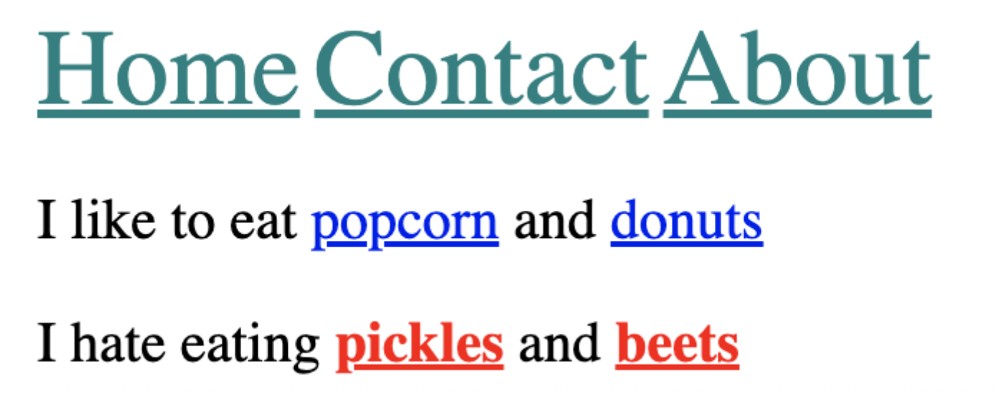
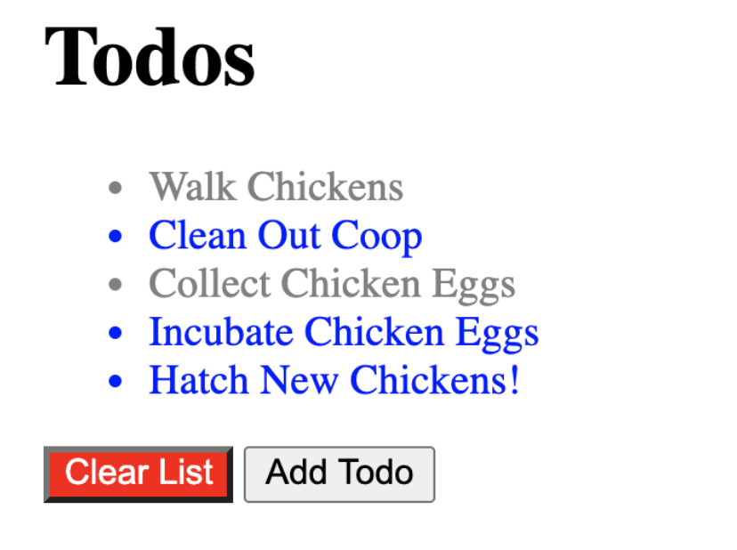
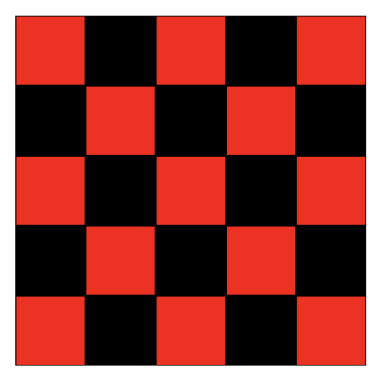

Week 4:
CSS Review and Advanced CSS introduction
Welcome to week 4 of Code Chica++! This class, we'll focus on deepening your understanding of CSS, and practicing using Git and Git Hub.
Weekly Challenges
-
Hipster Logo Exercise
I'm opening up a very hip artisanal vodka company called Purple Grain. Please help complete my incredibly ugly logo. Style the
< h1 >with the following styles:- uppercase all the letters, without touching the html! (note: you weren't taught how to do this, you will need to flex your googling skills)
- set the font-family to be 'monospace'
- center align the text
- set the font weight to 100
- make the text size 40px
- set spacing between letters to 20px
- add a wavy plum underline (plum is the color)
it should look like this once finished:

Make a pull request with your code to submit the challenge.
-
Box Model Exercise
Using what we just learned about the box model, width/height, and border...Add some styles to the app.css file to recreate the following image: (scroll down for specific instructions) Apply the following styles:The card div
- 210px width
- 1px grey border (solid border-style)
- 5px border radius
- center text aligned
The image
- 200px wide
- 5px border with color of rgb(236, 183, 191) (solid border-style)
- 50% border radius
it should look like this once finished:

-
Descendant Combinator Practice
Using what we just learned about the descendent combinator, write styles in app.css to accomplish the following:
(don't change any markup in index.html, please!)
Give only the links in the header :- font size of 30px
- color of teal
- Give only the links inside the paragraph with the id 'dislikes':
- bolded
- color of red
Your result should look like this:
 -
Basic Selectors Practice
It's time to get some practice with the new CSS Selectors we just learned. Without touching any of the starter HTML code in basic_selectors.html, write CSS in style block of the head according to these rules:
- Give all li elements the text color blue
- Give all elements with the class of done the text color grey
- Give the element with the id clear a red background and white text
It should look like this once complete:
 -
Checkerboard Exercise
The index.html file contains 25
divelements, each with the class of square. Please create a simple checkerboard pattern by making the even squares black and the odd squares red. Your result should look like the image below.